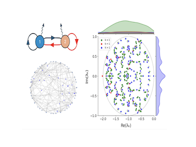
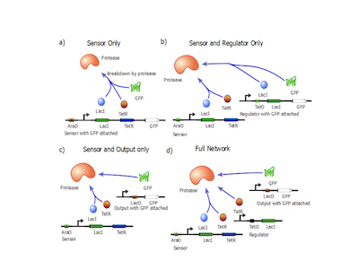

Contact: akappassov [at] gmail.com
I am a computational biologist with a background in mathematics (Purdue University) and research interests in self-organization in living matter and developmental dynamics. Previously, I was at the Centre for Integrative Systems Biology and Bioinformatics (CISBIO) at Imperial College where I wrote my Master's thesis with Prof. Robert Endres.
|  |
Video captions created by current Video LLMs are quite descriptive. In this paper we discuss the problem of contextual captioning and proposed some ways to train such model. Working hard to release the model too.
|
|  |
A Mathematical Framework for the Description and Prediction of Epistasis in a Synthetic Gene Circuit
Long video understanding dataset with 300,000 train QAs and 5000 evaluation QAs. Built on top of real human annotations using powerful LLMs with humans in the loop.
Supervisor: Dr. Ruben Perez-Carrasco
Contributors: Aibek Kappassov, Aaryan Bhatia, Robin Curnow, Chi Chun Chan |
Optimal network sizes for most robust Turing patterns. H. Shaberi, A. Kappassov, A. Matas-Gil, R. G. Endres. Scientific Reports (2025)